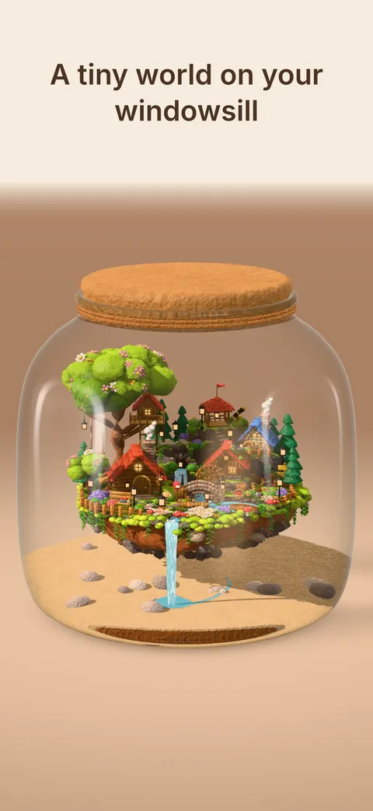
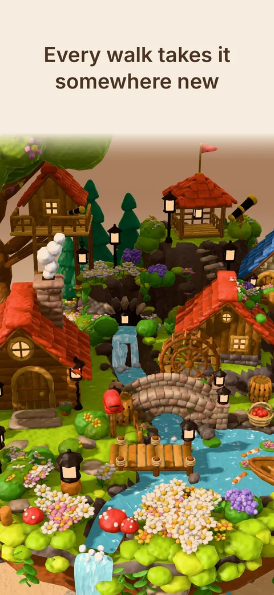
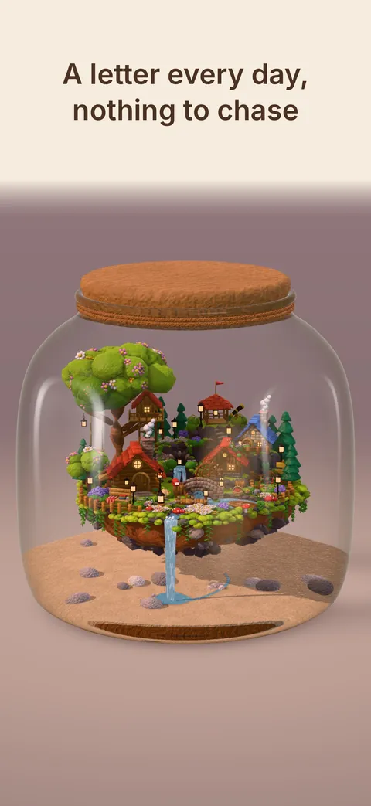
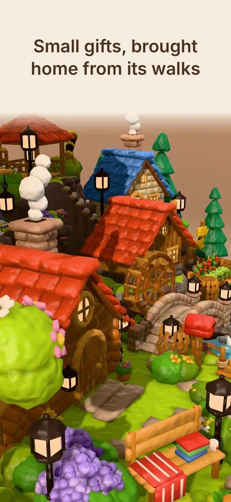
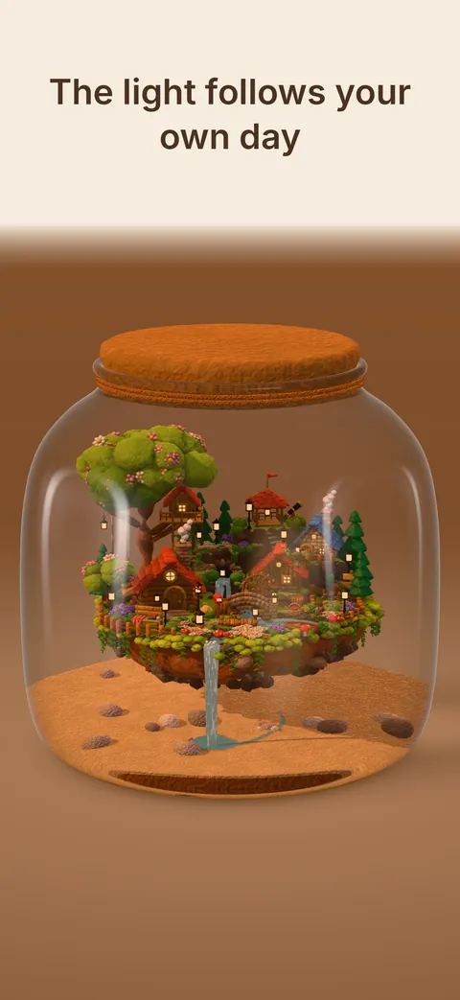
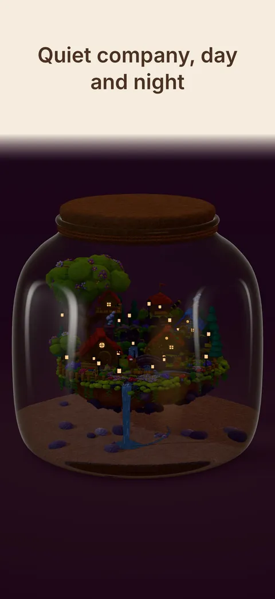

Your walks become its walks
With your permission, Ashling reads your steps from Apple Health. The snow-globe path grows a little further each day, and new plants and places appear.
A little friend lives on your windowsill. It walks when you walk, rests when you rest, and leaves small gifts by the jar.
Ashling lives only on your iPhone. There is no feed to scroll and nothing to keep up with. Open it when you want a quiet moment, then go on with your day.
With your permission, Ashling reads your steps from Apple Health. The snow-globe path grows a little further each day, and new plants and places appear.
On day three an hourglass appears. Each session walks a tiny caravan across the desert, and it brings back a bag of colored sand. No streaks to lose.
The little friend writes short letters and leaves instant photos by the jar. Keep them in a small photo book.
Dawn, noon, dusk and night inside the jar match the real clock. At night the windows glow and the island sleeps.
Pick a hat for your friend, take your own instant photo of the jar, and share it in one tap.
A Home Screen widget, a focus Live Activity on the Lock Screen, and a StandBy night light by your bed.
Swipe to see more






Ashling is free to download. Two optional extras are one-time purchases, never a subscription.
No account, no server, no ads, no analytics. Your steps are read on your iPhone and never leave it. This website has no trackers or cookies either.
No. Ashling is free to download. The hourglass and the moss lid are one-time purchases, and Restore Purchases brings them back on a new phone.
No. There is no sign-in and no server. Everything stays on your iPhone.
With your permission it reads your daily step count from Apple Health to decide how far the little friend walks. It never writes to Health, and the numbers never leave your device. If you say no, the app still works.
Nothing bad happens. The friend doesn't get sick or sad, and nothing is lost. The island simply waits for you.
Ashling is iPhone only at launch.
Ashling is planned for the App Store in spring 2027, for iPhone with iOS 17 or later. On launch day this page will link straight to it.
Ashling
Coming to the App StoreSpring 2027 · iPhone